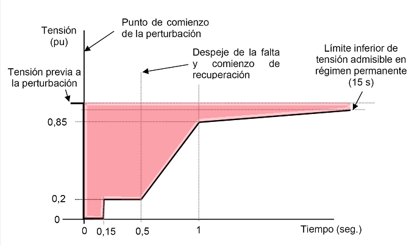
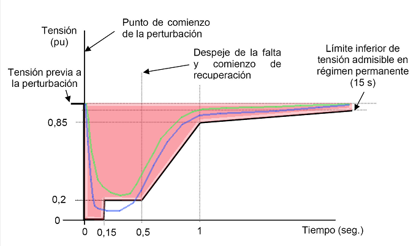

Because, in many countries, the contribution of the wind parks to total electricity production is considerable, it has been necessary to consider their influence on the "stability"of the Network. The power supply networks must be maintained under conditions of operation such as to ensure that there will not be a widespread cut in the supply in aExtensive territory. Para ello se diseñan atendiendo la evolución prevista de los consumos en cada nodo. Inicialmente, la garantía de este funcionamiento radicaba en el tipo de generadores (básicamente grandes generadores síncronos), con una gran inercia. Al aumentar la penetración de la eólica se introdujeron dos variaciones sobre la situación anterior: a) el viento es una fuente de energía no controlada; b) la inercia de los aerogeneradores era considerablemente inferior que la de los generadores asociados a las plantas térmicas, hidráulicas, nucleares, etc.
The first problem has been addressed by an early knowledge of wind evolution, along with a precise modeling of consumption evolution in each network node.
However, the response to very rapid changes (of the order of 1 s or less), which occur in the normal operation of Distribution Networks (for example, the fall of a tree on the electrical tensile) generates dynamics that can be well tolerated by the large synchronous generators, but could not be supported by the initial industrial wind turbines (those installed until the end of the 90s). The design of these aerogenerator models was based on "protecting the aerogenerator": the form of this protection was to detect abnormal situations (e.g. phase failure) and to disconnect the aerogenerator from the Network immediately.
This reaction to Network failures of those initial wind turbines had a perverse effect on the stability of the Network. To understand this effect let us think of the following sequence: suppose that we have a 25 MW wind farm and that there is a momentary cut in the supply. This may occur due to a short circuit in a phase, for example, that triggers a protection procedure (typically momentarily disconnected from the line, as it is known that this operation can, on its own, solve the problem). If the line is temporarily disconnected in the connection circuit with the wind farm, and assuming that the aerogenerators of this Park have only the self-protection mechanism, a cascade reaction will occur so that, in a very short time, the entire Park will be disconnected from the Network. In other words, a "minor" problem (a branch of a tree on the power line) ends with the loss of production of a complete plant, that is, a "greater" problem for the stability of the Network.
Due to this behaviour, the entities responsible for the control of the overall stability of the Electrical System modified the conditions to be assumed by any Power Production Plant, especially the Aerogenerators, so that they did not disconnect from the Network when the Network itself produced, at the Connection Point, short supply cuts (typically less than 1 second). These rules are known as "Grid Codes"or"Network codes"and vary from country to country, due to the different capacities of its corresponding power networks.
The specification is complex and is shown in following graphs:

Fig 1.The red-branded area is the area of evolution of the Red voltage in which the Aerogenerator cannot disconnect. That is, if there is a fall in the tension of the Network, but it is kept within the area in red, the Aerogeneratormust continue to generate.
The following figure shows two changes in the tension. The green is always inside the red zone, and therefore the Aerogenerator cannot disconnect without failing to comply with the regulations. However, if the evolution is blue, which leaves the red zone at the moment 0.15 seconds after "is the beginning of the incidence, if it can do so without violating the regulations.

Fig 2.The capacity of the wind turbines to support "Grid Codes" is called "Low Voltage Ride Through Capability"in English.